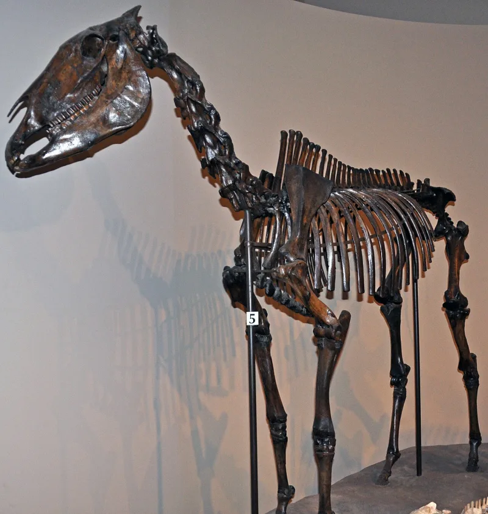
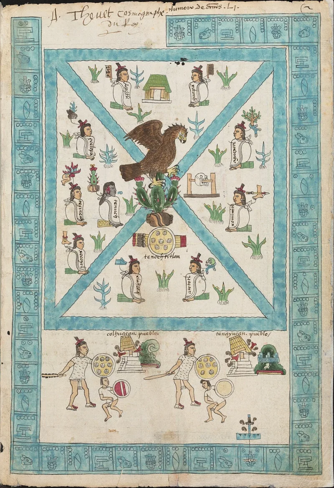
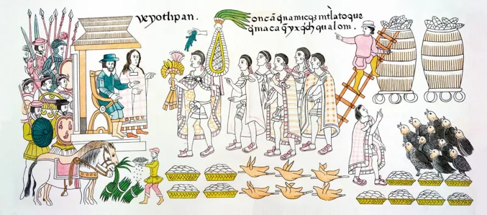

No good counter-argument has been published by LDS scholars.
Horses among the Jaredites and Nephites, from about 2500 BC to AD 400. Some are harnessed to chariots.
See 1 Nephi 18:25, Enos 1:21, Alma 18:9-12, 3 Nephi 3:22 and Ether 9:19.
Horses died out in the Americas around 10,000 BC. The Spanish brought them back in the 1500s.
In between there are no verified remains, no pictures and no words for them. The same blank covers cattle, oxen, asses, swine, and the elephants of Ether 9:19.
Book of Mormon Central and FAIR give three lines. Horse may be a loanshift — a familiar word used for a native animal such as a deer or a tapir.
Spaniards and native peoples did exactly that with unfamiliar animals. Small groups of horses may also have survived unnoticed; Wade Miller has had candidate remains tested.
And bones rot fast in tropical soil.
No verified pre-Columbian horse has been produced. Tested candidates came back either Ice Age or after Columbus.
The loanshift answer concedes that no actual horses were there. And it strains at the chariots, which need a draught animal.
Strong for you, but give the loanshift answer first and give it fairly. Michael Coe, a Yale archaeologist, laid the problem out in Dialogue in 1973.
"Has one pre-Columbian horse bone ever dated to Book of Mormon times?"



The word horse may be a borrowed label for a native beast, and bone rots fast.
Book of Mormon Central and FAIR offer three lines.
The word 'horse' may be a loanshift. That is a familiar label placed on a native animal such as a deer or a tapir. Spaniards and native peoples did exactly that with animals they had not seen before.
Small pockets of horses may also have survived into Book of Mormon times unnoticed. Wade Miller has had candidate late-dated remains tested. And a blank record counts for little in the tropics, where bone rarely survives.
Strong for you, but the loanshift answer is fair and belongs in your mouth first.
No verified pre-Columbian Holocene horse has ever been produced. Radiocarbon tests on candidate remains come back either Ice Age or after contact.
The loanshift defence grants the core point. No actual horses were there. And the horses harnessed to chariots resist the tapir reading, because a chariot needs a draught animal.
Michael Coe of Yale set the problem out in Dialogue in 1973.